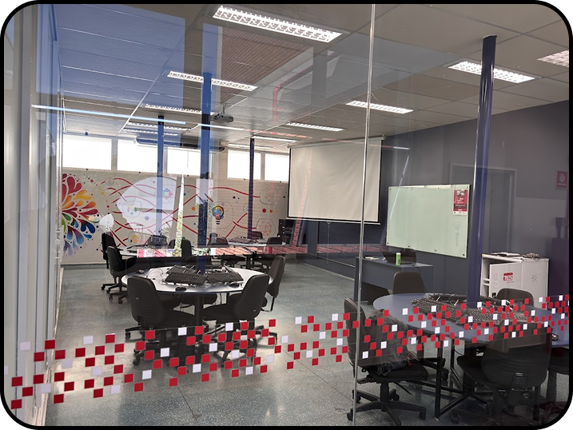
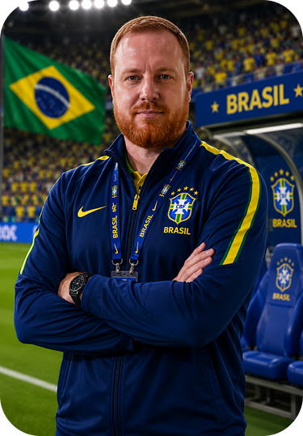
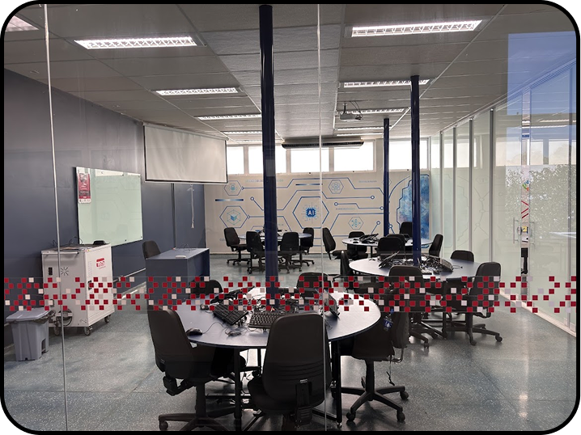
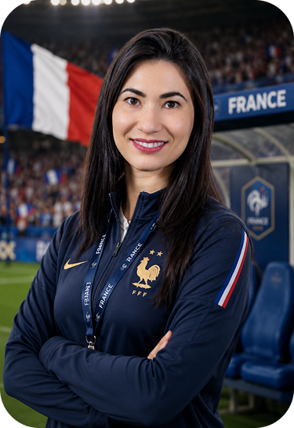

SOBRE AS SELEÇÕES
BRASIL
FRONT-END

A SELEÇÃO FRONT-END É CONHECIDA PELO SEU ESTILO DE JOGO OFENSIVO, CRIATIVO E ALTAMENTE TÉCNICO. COM JOGADORES ESPECIALISTAS EM HTML E CSS, O TIME CONSTRÓI JOGADAS RÁPIDAS, COM GRANDE DOMÍNIO DE POSSE DE BOLA E JOGADAS BEM ESTRUTURADAS PELAS LATERAIS. JÁ CONQUISTOU DIVERSOS TÍTULOS CONTINENTAIS DE "DESIGN CUP" E É TRICAMPEÃ MUNDIAL DA COPA DAS INTERFACES, SENDO REFERÊNCIA EM ESTÉTICA, VELOCIDADE E INOVAÇÃO VISUAL DENTRO DE CAMPO.
ESTÁDIO

AVENIDA JOÃO CERNACH, 2180 - VILA TRONCOSO - STADIUM SENAI
TÉCNICO

IGOR CACEREZ
FRANÇA
BACK-END

A SELEÇÃO BACK-END É O TIME DA ESTRATÉGIA E DA CONSISTÊNCIA, COM JOGADORES ESPECIALISTAS EM BANCOS DE DADOS, APIS E LÓGICA DE SERVIDOR. SUA DEFESA É PRATICAMENTE IMPENETRÁVEL. O TIME É CONHECIDO POR SUA ORGANIZAÇÃO TÁTICA E EFICIÊNCIA NAS CONTRA-ATAQUES, ALÉM DE JÁ TER CONQUISTADO CINCO TÍTULOS MUNDIAIS DA COPA DA LÓGICA E QUATRO CAMPEONATOS DE ESTABILIDADE DE SISTEMAS. É CONSIDERADA UMA DAS SELEÇÕES MAIS DIFÍCEIS DE VENCER, PELA SUA FORÇA E INTELIGÊNCIA DE JOGO.
ESTÁDIO

SAINT-DENIS, 15 - PARIS - STADIUM SENAI13
TÉCNICO

LAIS SINATRA